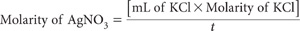
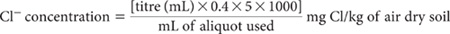
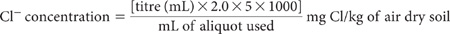

This method carries the same code in Rayment and Higginson (1992). Chloride ions in clarified soil/water extracts are determined by potentiometric titration with AgNO3 in conjunction with an Ag/AgNO3 electrode array. For routine soil testing of non-contaminated rural lands, it is usual to assume no interfering ions of consequence are present. I– and Br– are titrated as Cl–, however, so may need to be considered when soil samples are derived from mine spoil, contaminated land and the like. The same applies to ferricyanide, which causes high results and should be destroyed if known to be present in measurable concentrations. Interference from chromate and dichromate ions can be avoided by reducing them to the chromic state, or by their removal. Ferric iron also interferes when present in substantially greater amounts than Cl– (APHA 1998).
Table 5.1. Summary details of method codes, method titles, technologies and expected reliability of soil tests described in this chapter.
Code |
Technology |
Test method |
Notes |
5A1 |
Empirical extraction — potentiometric titration. |
Chloride – 1:5 soil/water extract, potentiometric titration. |
‘Classical’ analytical finish, best suited to small laboratories with simple analytical equipment. |
5A2a |
Empirical extraction — reliable automated colour finish by SFA. |
Chloride – 1:5 soil/water extract, automated colour. |
Best performed soil Cl method in ASPAC inter-laboratory proficiency programs, particularly at concentrations <50 mg Cl/kg. Method suits well equipped, large throughput, automated laboratories. |
5A2b |
Empirical extraction — reliable automated colour finish by FIA. |
Chloride – 1:5 soil/water extract by FIA. |
Similar to 5A2a, but requires close attention (filtering) to ensure no particles enter the flow stream. |
5A3a |
Empirical extraction — reliable IC analytical finish. |
Chloride – 1:5 soil/water extract, ion chromatography (chemical suppression of eluent conductivity). |
Proven analytical technology that requires finely filtered extracts of low ionic strength. Suits low throughput and/or small research laboratories. |
5A3b |
|
Chloride – 1:5 soil/water extract, ion chromatography (single-column with electronic suppression of eluent conductivity). |
|
5A4 |
Empirical extraction – ICPAES analytical finish. |
Chloride – 1:5 soil/water extract, ICPAES. |
Attractive option for laboratories equipped with ICP instrumentation that can operate at a wavelength of 134.72 nm. |
This titration-based method has long been used for assessing the Cl– salinity of Australian soils, but it offers few analytical advantages over an alternative (not included) based on a mercurimetric titration, except when soil extracts are deeply coloured.
Silver/Silver Chloride Electrode
Silver (Ag)/silver chloride (AgCl) electrodes can be obtained commercially or manufactured from a length (≈15 cm × ≈1.6 mm dia) of Ag wire attached to an electrical connection of a millivolt meter or equivalent. The clean Ag wire (preclean with 30% HNO3 until effervescence just commences) should be coated with a thin layer of AgCl by electrolysis. Pre-clean the Ag wire with fine emery paper followed by 30% HNO3 until effervescence just commences, then immerse (to about 1 cm) in 0.1M HCl and connect to the positive terminal of a 2 volt battery. Connect a Pt electrode to the negative pole through a variable resistance and ammeter. Pass a current of 3 to 4 milliamps until an even covering of AgCl deposits on the Ag wire. This should take from 1 to 30 min. For convenience, prepare several electrodes in the session and store in an aqueous NaCl solution of about 2000 mg/L. When not in use, store the electrodes in water. It is necessary to clean and recoat the Ag/AgCl electrodes occasionally but, with care, they should last for several years (Piper 1944).
Double Junction Calomel Electrode
Use a calomel electrode with a secondary salt bridge of saturated potassium nitrate to prevent leakage of Cl– into the test solutions. Alternatively, a mercury/mercurous sulfate electrode, such as Radiometer type K601, may be substituted (IR Wilson, pers.comm.).
0.01128 M Potassium Chloride Standard
1 mL contains 0.4 mg Cl.
Dissolve 0.8411 g potassium chloride (KCl; previously dried at 110°C for 2 h) and dilute to 1.0 L with deionised water.
Silver Nitrate Standard A
1 mL 0.011283 M AgNO3 contains 1.22 mg Ag, equivalent to 0.4 mg Cl.
Dissolve 1.9166 g silver nitrate (AgNO3) and dilute to 1.0 L with deionised water to prepare a solution of ≈0.01128 M AgNO3. Store in a brown glass bottle, away from light.
Silver Nitrate Standard B
1 mL 0.0564 M AgNO3 contains 6.08 mg Ag, equivalent to 2 mg of Cl.
Dissolve 9.583 g AgNO3 and dilute to 1.0 L with deionised water to prepare a solution of ≈0.0564 M AgNO3. Store in a brown glass bottle, away from light.
1.5 M Nitric Acid
Standardisation of AgNO3 solution
For the AgNO3 Standard A, pipette 20.0 mL KCl Standard into a 250 mL beaker, add about 100 mL deionised water, 2 mL 1.5 M HNO3 (dip pipette) and place on a magnetic stirrer. Insert the Ag/AgCl electrode and the preferred reference electrode connected to an automatic titrator or a millivolt meter. Commence stirring and titrate with AgNO3 solution. When using a millivolt meter, record the millivolt readings for each addition of AgNO3. The end-point is indicated when the largest voltage change occurs for a small constant addition of AgNO3. This should occur at ≈267 mV with a calomel reference electrode.
Repeat for the AgNO3 Standard B but use a 100 mL aliquot of KCl standard.

where t = titre (mL) of the particular AgNO3 solution
These standardisations should be repeated on completion of each batch.
Soil Extract
Prepare 1:5 soil/water suspensions as described for Method 3A1 and clarify by centrifugation or filtration. Take a suitable aliquot of known volume into a 250 mL beaker. If there is evidence of appreciable interfering ions, these should be removed/destroyed at this stage; see APHA (1998) for details. Otherwise add 100–200 mL deionised water, add 2 mL 1.5 M HNO3 and introduce a mechanical or magnetic stirrer. Insert electrodes and titrate with the appropriate AgNO3 Standard (depending on the expected level of Cl–) to the endpoint.
For exactly 0.011283 M AgNO3 solution:

For exactly 0.0564 M AgNO3 solution:

Make appropriate adjustments to calculations if AgNO3 Standards are not exactly the concentrations shown.
Report water-soluble Cl– (mg Cl/kg) on an air-dry soil basis.